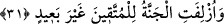

Ruzbihan Baklî Arâisu’l-Beyân’da demiştir ki; “Cehennem cennetin de özlediği gibi
Allah’ı özlemişti. Allah subhânehû cehennemin O’na olan şevkini görünce kadem
kahrının tesirlerinin ağırlığını, tecelli sıfatı ile cehenneme yükler. Cehennem azamet ile
dolar, her iki şey Allah’ın azameti karşısında değişir. Allah’ın azametinin cemalini ve
kademlerinden bir kademinin nurlarını görmekten dolayı bu anda cehennemliklerin
kalbinde Rab tayyiptir. Cehennemin ateşi ise Hakkın ona zuhûrunun bereketinin tesiriyle
gül ve güzel kokuya dönüşür.”
Âyette nefsin mutlak olarak fazlasını isterken onu hiçbir şeyin doyuramamasındaki
benzerliğinden dolayı insânî nefsin suretinin cehennem olduğuna işâret vardır. Yine aynı
şekilde azabın etrafında dolandığı nefsin sureti de lafız ve mânâ gibi aynı tertip üzere
fazlasını ister. Yani insânî nefs dünya ve onun şehvetlerine düşkündür. Oraya
(cehennem) bu neviden bir şey her atıldığında ve ona “doldun mu” diye sorulduğunda
der ki “dünya şehvetlerinden daha var mı?” Âdemoğlunun karın boşluğunu ancak toprak
doldurur.
Belki işitmişsindir, Gûr Çölü’nde
Kervanbaşı katırdan düştü ve şöyle dedi:
Dünya malı için koşturan açgözlü bir kimsenin
Gözünü ya kanaat ya da kara toprak doyurur.
Şu da var ki, insânî hırs muhabbetullahın kabuğudur. Hatta muhabbetin özüdür. Şâyet
bu duygu, dünya ve onun şehvetlerine dönük ise “hırs” olarak adlandırılır. Şâyet Allah’a
ve O’nun yakınlığına dönük ise “muhabbet” diye isimlendirilir. Biliniz ki hırsta fazla
olan şey muhabbette eksikliğe yol açar. Hırsta eksik olan her şey de muhabbette
ziyadeyi sağlar. Muhabbet ateşi yandığında oraya dünya ve âhiret mahbubları atıldıkça
muhabbetin ateşi sükûn bulmaz. Bilakis bunlar onun odunu olur, peşpeşe gelip üst üste
yığılır ve muhabbet “yeter yeter” der. et-Te’vilâtü’n-Necmiyye’de böyle geçmektedir.
31. Cennet de takvâ sahiplerine yaklaştırılır; (onlardan) uzakta olmayacaktır.
Âyetteki “izlâf” kelimesi, yakınlaştırmak, yakında bulunmak, yakında olmak anlamına
gelir. Cennet, küfür ve ma’siyetlerden uzak duran müttakiler için yaklaştırılmıştır. Bu
müttakiler, belli bir noktadan cenneti izlerler, içindeki meftun edici güzelliklere vâkıf
olurlar ve kendileri de orada toplanacakları ve bu mükâfâtı kazanacakları için sevince
kapılırlar.
“(Onlardan) uzakta olmayacaktır.” Cennet, onlara uzak olmayacak şekilde
yaklaştırılmıştır. Âyetin bu kısmı tekid içindir. Yani müttakiler, cennete henüz içine
girmeden yakın bir yerden bakarlar. Bu ifade, ya zarf oluşundan ya da tekid içeren hal